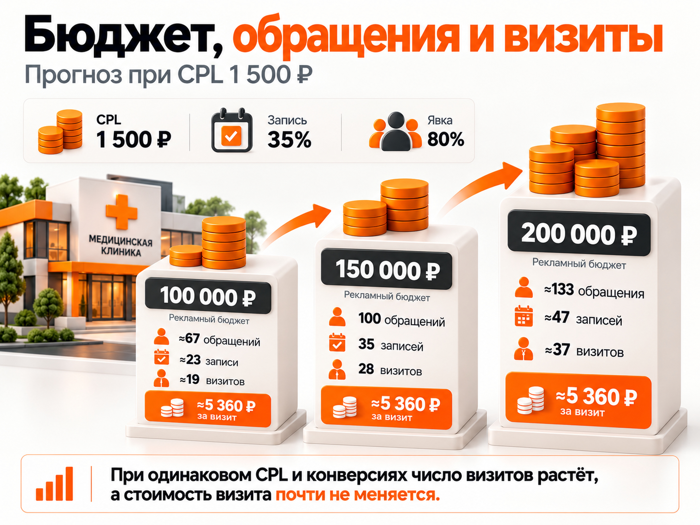

Блог о платном трафике
Продвижение медицинской клиники в 2026 году: инструкция и прогноз
Продвижение медицинской клиники в 2026 году лучше строить вокруг конкретных услуг и стоимости привлечения новых пациентов. Для большинства частных медицинских центров я бы начинал с Яндекс Директа на Поиске, Яндекс Карт и отдельных страниц услуг. SEO, РСЯ, медицинские агрегаторы и другие каналы подключал бы с учётом задач клиники.
Главный показатель здесь не количество кликов и даже не стоимость заявки. Важно, сколько человек действительно записались, пришли на приём и какую выручку принесли клинике.
В этой статье разберу, как организовать продвижение медицинского центра, какие рекламные каналы использовать, сколько стоят обращения в реальных проектах и как рассчитать бюджет под необходимое количество пациентов.
С чего начинать продвижение медицинской клиники
Начинать нужно с определения направлений, которым действительно необходимы новые пациенты.
У многопрофильного медицинского центра могут быть десятки услуг, но продвигать их одинаково невыгодно. УЗИ, анализы, стоматология, гинекология и хирургия отличаются спросом, средним чеком, загрузкой специалистов и экономикой.
Перед запуском рекламы рекомендую оценить каждое направление по четырём параметрам:
| Параметр | Что необходимо выяснить |
|---|---|
| Спрос | Сколько людей ищут услугу в нужном регионе |
| Загрузка | Сколько новых пациентов реально могут принять врачи |
| Экономика | Сколько клиника может заплатить за нового пациента |
| Конкуренция | Какие предложения, цены и условия есть у конкурентов |
Приоритет продвижения получают направления, где одновременно есть спрос, свободная загрузка и приемлемая стоимость привлечения пациента.
Например, если врач расписан на три недели вперёд, увеличение расходов на его продвижение вряд ли решит актуальную задачу бизнеса. А если диагностическое оборудование простаивает, привлечение пациентов на исследования может дать значительно более быстрый эффект.
Отдельно нужно учитывать новых и повторных пациентов. Рекламу на привлечение новой аудитории нельзя оценивать так же, как работу с людьми, которые уже посещали клинику.
Какие каналы продвижения медицинской клиники работают в 2026 году
Универсального рекламного канала для всех медицинских услуг нет. Выбор зависит от специализации клиники, региона и того, насколько быстро пациент принимает решение.
| Канал | Основная задача | Когда использовать |
|---|---|---|
| Яндекс Директ, Поиск | Получать обращения по сформированному спросу | Когда пациент уже ищет услугу или врача |
| Яндекс Карты | Привлекать локальную аудиторию | Для клиник с физическими филиалами |
| SEO | Создавать органический поток посетителей | Для системного продвижения услуг и врачей |
| РСЯ | Расширять охват | После проверки ограничений и качества обращений |
| Медицинские агрегаторы | Привлекать пациентов, сравнивающих специалистов | При конкурентоспособных профилях врачей |
| Telegram и VK | Развивать узнаваемость и собственную аудиторию | Для контента, подписчиков и долгосрочного контакта |
Для обычной локальной клиники первым платным каналом я бы выбрал Поиск Яндекса. Пользователь, который вводит «УЗИ брюшной полости рядом», уже демонстрирует конкретную потребность.
Однако не стоит игнорировать Карты. Пациент может увидеть рекламу, проверить рейтинг клиники, посмотреть фотографии, сравнить отзывы и записаться уже через карточку организации.
Поэтому рекламная система, сайт и геосервисы должны работать совместно.
Как настроить Яндекс Директ для медицинской клиники
Основной принцип настройки: каждый значимый тип спроса должен вести на соответствующее предложение, а не на общую главную страницу клиники.
Например, человек ищет приём уролога. Ему важно увидеть стоимость консультации, доступных специалистов, адрес и возможность записи. Подробный рассказ обо всех направлениях медицинского центра в этом случае только усложняет выбор.
Пациент переходит по объявлению из поиска на страницу конкретной услуги, знакомится с информацией о враче и цене, а затем записывается на приём.
Какие поисковые запросы использовать
Я бы разделил поисковый спрос на несколько групп.
| Тип спроса | Пример запроса | Особенность |
|---|---|---|
| Конкретная услуга | УЗИ брюшной полости цена | Человек ищет определённое исследование |
| Специалист | Уролог платно Ростов | Нужен врач определённого профиля |
| Географический | Медицинский центр рядом | Важны расположение и доступность |
| Брендовый | Название клиники + адрес | Пользователь уже знаком с организацией |
| Информационный | Как подготовиться к УЗИ | Не всегда готов записаться |
В первую очередь имеет смысл работать с прямыми коммерческими запросами. Информационный спрос нужно оценивать отдельно: часть посетителей приходит получить ответ, а не записаться.
После запуска обязательно анализировать фактические поисковые запросы. Автотаргетинг способен расширять охват за пределы первоначального списка ключей. Поэтому сбор семантики не заменяет дальнейшую проверку трафика.
Подробно этот процесс я разобрал в статье «Минус-фразы в Яндекс Директе».
Как разделять рекламные кампании
Не стоит создавать одну кампанию для всех услуг, если у них существенно различаются цели и экономика. Но и чрезмерное дробление может навредить.
Для клиники с ограниченным бюджетом я бы начал с нескольких приоритетных направлений, объединяя услуги с близкими задачами и допустимой стоимостью заявки.
Отдельно желательно учитывать брендовые запросы. Они часто конвертируются лучше, поскольку пользователь уже знает клинику или конкретного врача.
Если смешать брендовый и небрендовый трафик, общая стоимость обращения может выглядеть привлекательнее, чем реальная стоимость привлечения новой аудитории.
Как выбирать стратегию
В 2026 году качество автоматических стратегий во многом зависит от корректно переданных целей.
Если подтверждённых записей мало, оптимизация исключительно по ним может давать нестабильный результат. В таком случае сначала стоит использовать более частую, но качественную цель и постепенно переходить к глубоким конверсиям.
Нельзя автоматически рекомендовать оплату за конверсии всем медицинским клиникам. Стратегия зависит от бюджета, количества событий, географии и доступной статистики.
РСЯ для медицинских услуг: когда имеет смысл запускать
РСЯ может обеспечивать дополнительный охват и обращения, но более дешёвый клик не означает более дешёвого пациента.
На Поиске человек самостоятельно формулирует потребность. В рекламной сети объявление может появиться тогда, когда пользователь вообще не планировал обращаться в медицинское учреждение.
Поэтому оценивать РСЯ нужно по качеству обращений, записям и визитам.
Для медицинской рекламы существуют дополнительные ограничения. Яндекс не использует поведенческий таргетинг и ретаргетинг в сетях для определённых деликатных тематик, включая лечение некоторых тяжёлых заболеваний и интимные проблемы.
Это означает, что стандартная схема возвращения всех посетителей сайта баннерами подходит не для каждой медицинской услуги.
Перед запуском РСЯ необходимо проверить допустимые способы показа для конкретного направления. Не следует рассчитывать на ретаргетинг как на обязательный источник пациентов.
Требования к рекламе медицинских услуг в 2026 году
Медицинские услуги относятся к регулируемым рекламным категориям.
Для размещения рекламы в Яндекс Директе медицинской организации требуется предоставить лицензию на медицинскую деятельность, включая необходимые приложения. Адрес оказания услуг должен соответствовать информации в лицензии и на сайте.
В рекламных материалах запрещены утверждения, противоречащие законодательству, в частности заявления о полной безвредности услуг и ссылки на конкретные случаи излечения в качестве рекламного аргумента.
Закон «О рекламе», статья 24, предусматривает предупреждение о противопоказаниях и необходимости консультации специалиста. Для большинства способов размещения под него выделяется не менее 5% рекламного пространства.
В текстовых объявлениях Директа соответствующее предупреждение добавляется автоматически. В графических объявлениях Единой перфоманс-кампании, видео и некоторых медийных форматах его нужно предусмотреть самостоятельно.
Перед отправкой объявлений на модерацию необходимо проверить:
- медицинскую лицензию и приложения;
- юридические сведения на сайте;
- соответствие рекламируемых услуг лицензии;
- текст объявлений и посадочные страницы;
- предупреждения в креативах;
- ограничения таргетинга для конкретной тематики.
Эту проверку лучше провести до подготовки большого количества объявлений.
Каким должен быть сайт медицинской клиники
Посадочная страница должна быстро отвечать на вопросы пациента: оказывает ли клиника нужную услугу, кто её выполняет, сколько это стоит, где находится медицинский центр и как записаться.
На странице основной услуги рекомендую разместить:
- Название услуги и краткую информацию о ней.
- Актуальную стоимость или понятные условия расчёта.
- Врачей, их квалификацию и сведения об опыте.
- Информацию о подготовке, если она необходима.
- Адрес филиала, контакты и график работы.
- Понятную форму записи или телефон.
- Необходимые сведения о медицинской организации.
Для рекламы многопрофильного центра отдельные страницы направлений обычно полезнее одной общей посадочной.
Форма записи не должна превращаться в длинную анкету. Для первого контакта достаточно минимальной информации, необходимой администратору.
Также важно проверить мобильную версию сайта. Пациент должен без затруднений найти телефон, стоимость и кнопку записи.
Яндекс Карты и репутация клиники
Для медицинского центра Яндекс Карты являются самостоятельным каналом получения обращений.
Карточка клиники участвует в выборе ещё до перехода на сайт. Пользователь сравнивает расположение, рейтинг, фотографии, стоимость и отзывы.
Поэтому необходимо поддерживать актуальными адреса, телефоны, график работы, перечень услуг, фотографии и способы записи.
Если у клиники несколько филиалов, для каждого важно вести отдельный учёт обращений и результатов. Общие показатели могут скрывать различия в загрузке, репутации и эффективности рекламы.
Отзывы необходимо обрабатывать регулярно, но не раскрывать в публичных ответах медицинские сведения пациентов.
Как отслеживать рекламу до состоявшегося визита
Одна из наиболее серьёзных ошибок медицинского маркетинга - считать полноценной заявкой любое нажатие на кнопку сайта.
Эффективность рекламы нельзя оценивать только по кликам и отправленным формам: клик по номеру телефона ещё не означает разговор, форма не гарантирует запись, а записавшийся пациент может не прийти на приём.
Нужно учитывать весь путь пациента от первого обращения после рекламы до проверки целевого характера запроса, подтверждения записи, состоявшегося визита и повторного посещения.
Связать эти этапы помогают Яндекс Метрика, учёт обращений, коллтрекинг и CRM либо медицинская информационная система. При анализе важен результат обработки каждого обращения, поскольку пропущенный звонок, отказ от записи и состоявшийся визит имеют разную ценность.
При передаче офлайн-конверсий в рекламные системы нужно соблюдать требования к персональным данным. Диагнозы, результаты исследований и другие сведения о здоровье не должны передаваться в качестве рекламных параметров.
Подробнее об интеграции описано в статье «Офлайн-конверсии в Яндекс Директе».
Пример расчёта воронки
Предположим, реклама принесла 100 обращений.
В расчётной модели 35% обращений превращаются в подтверждённые записи, а 80% записавшихся пациентов приходят на приём.
Тогда результат будет следующим:
| Этап | Количество |
|---|---|
| Обращения | 100 |
| Подтверждённые записи | 35 |
| Состоявшиеся визиты | 28 |
Конверсия обращения в визит составляет 28%.
Это пример расчёта, а не среднерыночный норматив. Фактические показатели нужно определять по данным конкретной клиники.
Сколько стоит заявка для медицинской клиники в 2026 году
Единой стоимости заявки для всех медицинских центров не существует. На неё влияют регион, специализация, конкуренция, известность клиники и качество сайта.
Рассмотрим реальные опубликованные результаты.
Кейс сети из четырёх клиник Подмосковья
В кейсе, опубликованном в июле 2026 года, агентство описало продвижение сети из четырёх медицинских центров.
За четыре месяца были получены следующие результаты:
| Показатель | Результат |
|---|---|
| Рекламные расходы | 12 422 486 ₽ |
| Количество заявок | 13 838 |
| Расчётная стоимость заявки | ≈898 ₽ |
Проект включал разные медицинские направления и значительный объём рекламных кампаний.
Этот результат нельзя переносить на любую частную клинику. В частности, в общей статистике присутствовали брендовые обращения, а масштаб рекламного бюджета существенно превосходит возможности небольших медицинских центров.
Мой кейс медицинского сервиса доктора Дзидзарии
В проекте медицинского сервиса продвигались анализы на дому, чек-апы мужского здоровья и консультационные услуги.
После оптимизации Яндекс Директа результаты были следующими:
| Показатель | Результат |
|---|---|
| Расход | ≈133 000 ₽ |
| Заявки с сайта | 72 |
| Стоимость заявки | ≈1850 ₽ |
| CPL до оптимизации | ≈4400 ₽ |
Общий Поиск принёс 26 заявок примерно по 1714 ₽. Отдельная Мастер-кампания с брендовым спросом дала 25 заявок примерно по 1012 ₽.
Этот пример хорошо показывает, почему необходимо отдельно оценивать брендовые и небрендовые обращения.
При этом звонки не включались в итоговую статистику из-за отсутствия коллтрекинга. Поэтому приведённый CPL относится только к зафиксированным заявкам с сайта.
Подробнее: кейс медицинского сервиса доктора Дзидзарии.
Какой CPL закладывать в прогноз
Для предварительного расчёта многопрофильной клиники можно использовать сценарный диапазон 1000–2000 ₽ за обращение.
Это не официальная средняя стоимость медицинской заявки в России. Это условный диапазон для построения первоначальной финансовой модели.
Для конкурентных направлений, особенно в крупных городах, стоимость обращения может быть значительно выше.
Поэтому окончательный медиаплан необходимо рассчитывать под конкретный город, услугу и сайт.
Прогноз рекламного бюджета медицинской клиники
Рекламный бюджет следует рассчитывать от необходимого количества состоявшихся визитов.
Возьмём условную клинику. Используем расчётную воронку из предыдущего раздела: 35% обращений превращаются в записи, 80% записавшихся приходят. Общая конверсия обращения в визит составляет 28%.
Сначала посмотрим на увеличение рекламного бюджета при одинаковом CPL 1500 ₽ и неизменных конверсиях:
| Рекламный бюджет | Расчётные обращения | Расчётные визиты | Стоимость визита* |
|---|---|---|---|
| 100 000 ₽ | ≈67 | ≈19 | ≈5360 ₽ |
| 150 000 ₽ | 100 | 28 | ≈5360 ₽ |
| 200 000 ₽ | ≈133 | ≈37 | ≈5360 ₽ |
*Стоимость визита рассчитывается по неокруглённому ожидаемому числу визитов: 1500 / 0,28 ≈ 5357 ₽. Количество обращений и визитов в таблице округлено для наглядности.
При сохранении CPL и конверсии увеличение бюджета приносит больше обращений и визитов, но не меняет расчётную стоимость одного визита. На практике при масштабировании CPL и конверсии могут измениться.
Теперь другой вопрос: сколько будет стоить одинаковое количество 100 обращений, если CPL отличается?
| CPL | Рекламный бюджет для 100 обращений | Визиты | Стоимость визита |
|---|---|---|---|
| 1000 ₽ | 100 000 ₽ | 28 | ≈3570 ₽ |
| 1500 ₽ | 150 000 ₽ | 28 | ≈5360 ₽ |
| 2000 ₽ | 200 000 ₽ | 28 | ≈7140 ₽ |
Это две разные модели: в первой меняем бюджет при фиксированном CPL, во второй меняем CPL при фиксированном числе обращений. На иллюстрации к разделу показана первая модель.
Здесь учтены только расходы на рекламу. Стоимость работы специалиста, разработки сайта, CRM и коллтрекинга в модель не включена.
Если задача клиники - получить 50 дополнительных состоявшихся визитов, расчёт будет следующим:
50 / 0,28 ≈ 179 обращений.
При условном CPL от 1000 до 2000 ₽ понадобится рекламный бюджет примерно от 179 000 до 358 000 ₽ в месяц.
Это прогноз по заданной модели, а не обещание результата.

Как рассчитать допустимую стоимость заявки
Правильнее определять допустимый CPL исходя из экономики услуги, а не из средней цены лида у конкурентов.
Допустимый CPL = допустимая стоимость нового пациента × конверсия обращения в визит.
Например, клиника готова потратить на привлечение пациента не более 6000 ₽. Конверсия из обращения в визит составляет 28%.
Тогда:
6000 × 0,28 = 1680 ₽.
Следовательно, при таких условиях допустимая стоимость обращения составляет примерно 1680 ₽.
Но улучшить экономику можно не только снижением стоимости рекламы.
Предположим, CPL равен 1800 ₽.
| Показатель | Исходная ситуация | После улучшения |
|---|---|---|
| Стоимость обращения | 1800 ₽ | 1800 ₽ |
| Конверсия обращения в состоявшийся визит | 28% | 40% |
| Стоимость визита | ≈6430 ₽ | 4500 ₽ |
При неизменной цене заявки улучшение конверсии именно в состоявшийся визит уменьшает стоимость визита примерно на 30%. Конверсию в подтверждённую запись и явку нужно учитывать отдельно, если они приведены.
Поэтому иногда эффективнее сначала проверить работу администраторов, скорость ответа и запись на приём, а не пытаться бесконечно снижать ставки в рекламном кабинете.
SEO-продвижение медицинского центра
SEO стоит развивать параллельно с платной рекламой.
Для медицинского сайта важны отдельные страницы услуг, специалистов, исследований и филиалов. Каждая должна отвечать на конкретную потребность пациента.
Информационные статьи имеют смысл, когда закрывают реальные вопросы: как подготовиться к исследованию, как проходит процедура, какие есть ограничения и когда необходима консультация врача.
Медицинские рекомендации должны проходить проверку профильным специалистом. Для таких материалов особенно важны точность, сведения об авторе и дата актуализации.
SEO не заменяет Яндекс Директ мгновенно. Но по мере развития сайта органический трафик может становиться дополнительным стабильным источником обращений.
Telegram Ads для медицинской клиники
Telegram Ads можно использовать для развития собственного канала медицинского центра, повышения узнаваемости и регулярного контакта с аудиторией.
Однако подписчика не следует считать состоявшимся пациентом.
В моём кейсе медицинского центра в Коврове при рекламном бюджете 140 € удалось привлечь 62 подписчика примерно по 2 €.
Использовалась комбинация географического и тематического таргетинга. Часть объявлений с медицинскими формулировками отклонялась модерацией, поэтому рекламные сообщения пришлось корректировать.
Подробнее: кейс медицинского центра в Telegram Ads.
Для большинства небольших клиник я не стал бы заменять сформированный поисковый спрос продвижением подписчиков. Это разные задачи, которые требуют разных показателей эффективности.
Основные ошибки продвижения медицинской клиники
Наиболее распространённые проблемы связаны не только с рекламными настройками.
Продвижение всех услуг одной кампанией. Разные направления имеют собственную экономику и требуют отдельного анализа.
Смешивание брендового и холодного спроса. Общий CPL становится менее информативным.
Переходы на нерелевантные страницы. Пациенту приходится самостоятельно искать нужную услугу.
Отсутствие учёта звонков. Значительная часть обращений не попадает в рекламную статистику.
Оптимизация по формальным действиям. Клики по кнопкам учитываются как заявки, хотя реального обращения может не быть.
Игнорирование администраторов. Рекламный бюджет приводит обращения, но клиника теряет пациентов при записи.
Масштабирование по дешёвому CPL. Увеличиваются расходы на обращения, которые не превращаются в визиты.
Подробнее о последней проблеме: «Нецелевые лиды из Яндекс Директа».
Пошаговый план продвижения медицинской клиники
- Определить приоритетные направления с учётом спроса, загрузки и экономики.
- Рассчитать допустимую стоимость нового пациента.
- Проверить посадочные страницы, цены, врачей и возможность записи.
- Подготовить лицензионные документы и проверить требования к рекламе.
- Настроить Яндекс Метрику, CRM и учёт звонков.
- Привести в порядок карточки клиники и филиалов в Яндекс Картах.
- Запустить поисковую рекламу по приоритетным услугам.
- Разделить брендовые и небрендовые обращения.
- Проверять фактические поисковые запросы и качество трафика.
- Передавать в аналитику подтверждённые записи и состоявшиеся визиты.
- Масштабировать направления с приемлемой стоимостью пациента.
- Параллельно развивать SEO и другие дополнительные каналы.
Частые вопросы
Как привлечь больше пациентов в частную клинику?
Начать с услуг, по которым есть свободная загрузка и сформированный спрос. Подготовить релевантные страницы, настроить поисковую рекламу и Яндекс Карты, затем отслеживать путь от обращения до визита.
Сколько стоит реклама медицинской клиники в месяц?
Единого бюджета нет. В рассмотренной расчётной модели 100 обращений стоят от 100 000 до 200 000 ₽ при CPL от 1000 до 2000 ₽. Для конкретной клиники цифры могут существенно отличаться.
Что выгоднее для медицинской клиники: SEO или Яндекс Директ?
Яндекс Директ позволяет начать привлекать платный трафик после запуска кампаний. SEO требует больше времени, но формирует органический спрос. Для системного продвижения целесообразно использовать оба инструмента.
Как оценивать эффективность рекламы медицинского центра?
Основные показатели - целевые обращения, подтверждённые записи, состоявшиеся визиты и стоимость привлечения нового пациента. Дополнительно важно учитывать выручку и повторные посещения.
Можно ли продвигать медицинские услуги через РСЯ?
Да, но для некоторых медицинских тематик существуют ограничения поведенческого таргетинга и ретаргетинга. Допустимые настройки нужно проверять для конкретной услуги.
Итог: что действительно важно в медицинском маркетинге
Эффективное продвижение медицинской клиники - это не максимальное количество дешёвых заявок.
Главная задача - привлекать новых пациентов по стоимости, которая соответствует экономике конкретных медицинских услуг.
Для этого необходимо связать рекламные кампании, сайт, обработку обращений и фактические визиты. Только такая аналитика позволяет понять, какие направления стоит масштабировать, а какие требуют доработки.
Я занимаюсь настройкой и ведением Яндекс Директа с 2014 года, включая проекты в медицинской тематике. В работе уделяю внимание не только рекламным показателям, но и качеству обращений, аналитике и дальнейшим результатам бизнеса.
Стоимость моих услуг начинается от 30 000 ₽ в месяц. Подробнее о составе работ можно прочитать в статье «Настройка Яндекс Директ под ключ».